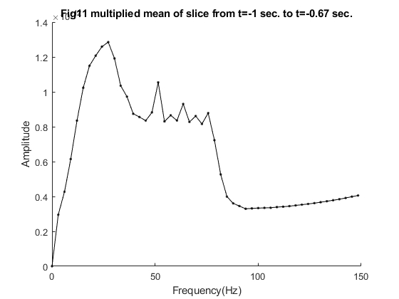

Contents
8.1
load('erf-data.mat');
figure(1);
hold on;
title("Fig1 FC")
xlabel("Time(sec)");
ylabel("Amplitude");
for(i = 1:4)
plot(time,dataFC(i,:));
end
legend("Trial 1", "Trial 2", "Trial 3", "Trial 4");
hold off
figure(2);
hold on;
title("Fig2 FIC")
xlabel("Time(sec)");
ylabel("Amplitude");
for(i = 1:4)
plot(time,dataFIC(i,:));
end
legend("Trial 1", "Trial 2", "Trial 3", "Trial 4");
hold off;
figure(3);
hold on;
title("Fig3 IC")
xlabel("Time(sec)");
ylabel("Amplitude");
for(i = 1:4)
plot(time,dataIC(i,:));
end
legend("Trial 1", "Trial 2", "Trial 3", "Trial 4");
hold off;
8.2
meanFC = mean(dataFC,1);
meanFIC = mean(dataFIC,1);
meanIC = mean(dataIC,1);
figure(4)
hold on;
title("Fig4 mean over trials")
xlabel("Time(sec)");
ylabel("Amplitude");
plot(time,meanFC);
plot(time,meanFIC);
plot(time,meanIC);
legend("FC","FIC","IC");
xlim([0,1])
hold off;
figure(5)
hold on;
title("Fig5 FC mean over trials and raw")
xlabel("Time(sec)");
ylabel("Amplitude");
p = plot(time,meanFC);
set(p(1),'linewidth',3);
for(i = 1:10)
plot(time,dataFC(i,:),'--');
end
legend("Mean");
xlim([0,1])
hold off;
figure(6)
hold on;
title("Fig6 FIC mean over trials and raw")
xlabel("Time(sec)");
ylabel("Amplitude");
p = plot(time,meanFIC);
set(p(1),'linewidth',3);
for(i = 1:10)
plot(time,dataFIC(i,:),'--');
end
legend("Mean");
xlim([0,1])
hold off;
figure(7)
hold on;
title("Fig7 IC mean over trials and raw")
xlabel("Time(sec)");
ylabel("Amplitude");
p = plot(time,meanIC);
set(p(1),'linewidth',3);
for(i = 1:10)
plot(time,dataIC(i,:),'--');
end
legend("Mean");
xlim([0,1])
hold off;

8.3
clearvars;
load('tfr-data.mat');
fftData = fft(data, [], 2);
fftAmp = abs(fftData)./size(fftData,2);
n = size(fftData,2);
fs = n/abs(min(time) - max(time));
f = fs/n*(0:n-1);
f_nyquist = fs/2;
if mod(n,2)==0
n_cutoff = n/2;
else
n_cutoff=(n-1)/2;
end
f = f(1:n_cutoff);
fftAmp = 2*fftAmp(:,1:n_cutoff);
fftAmp(:,1) = fftAmp(:,1)./2;
ampMean = mean(fftAmp,1);
figure(8)
hold on;
title("Fig8 mean of frequency amplitudes")
plot(f,ampMean,'k.-');
xlabel("Frequency,(Hz)");
ylabel("Amplitude");
hold off;
multMean = ampMean.*f;
figure(9)
hold on;
title("Fig9 multiplied mean of frequency amplitudes")
plot(f,multMean, 'k.-');
xlabel("Frequency(Hz)");
ylabel("Amplitude");
hold off;
8.4
s_begin = 1;
s_end = 100;
slice = data(:,s_begin:s_end);
stime = time(:,s_begin:s_end);
[fslice,fftSlice, ampMeanSlice, multAmpMeanSlice] = fTrans(slice,stime);
figure(10)
hold on;
title("Fig10 mean of slice from t=" + time(s_begin) + " sec. to t=" + time(s_end) + " sec.");
plot(fslice,ampMeanSlice, 'k.-');
xlabel("Frequency(Hz)");
ylabel("Amplitude");
hold off;
figure(11)
hold on;
title("Fig11 multiplied mean of slice from t=" + time(s_begin) + " sec. to t=" + time(s_end) + " sec.");
plot(fslice,multAmpMeanSlice, 'k.-');
xlabel("Frequency(Hz)");
ylabel("Amplitude");
hold off;
s_begin = 801;
s_end = 900;
slice2 = data(:,s_begin:s_end);
stime2 = time(:,s_begin:s_end);
[fslice2,fftSlice2, ampMeanSlice2, multAmpMeanSlice2] = fTrans(slice2,stime2);
figure(12)
hold on;
title("Fig12 multiplied mean of slices");
plot(fslice,multAmpMeanSlice, '.-');
plot(fslice2,multAmpMeanSlice2, '.-');
legend("from t = " + stime(1) + " sec. to t = " + stime(end) + " sec.", "from t = " + stime2(1) + " sec. to t = " + stime2(end) + " sec.")
xlabel("Frequency(Hz)");
ylabel("Amplitude");
hold off;
[V, I] = nearest_value(f,29.0);
amp29 = ampMean(I);

8.6
samples = zeros(1,size(data,2));
sb = 0;
se = 100;
foi = 29;
for i=1:900
sb = 0 + i;
se = 100 + i;
samples(i) = get_single_amplitude(data, fs, sb, se, foi);
end
8.7
wsize = 100;
samples = get_amplitude(data, fs, wsize, foi);
timevector = linspace(-1,2,size(data,2));
figure(13)
hold on;
title("Fig13 Amplitude of 29Hz over time.");
plot(timevector,samples);
xlabel("Time(s)");
ylabel("Amplitude");
hold off;
8.8
tfr = zeros(60, size(data,2));
for i = 1:60
period = 1/i;
samplePeriod = 1/fs;
wsize = round((period/samplePeriod) * 3);
tfr(i,:) = get_amplitude(data, fs, wsize, i);
end
hold on;
figure(14)
image(32 + 32 * tfr./max(max(abs(tfr))));
title("Fig15 Amplitude of frequencies over time.");
set(gca, 'YDir', 'normal');
set(gca, 'XTick', linspace(1,size(data,2), 10));
tf = time(1);
tl = time(end);
set(gca, 'XtickLabel', round(10 * (linspace(tf, tl, 10))) / 10);
colormap jet;
xlabel("Time(s)");
ylabel("Frequency");
hold off
8.9
baselineData = data(:,time < 0);
baselineMeans = zeros(60,900);
for i = 1:60
period = 1/i;
samplePeriod = 1/fs;
wsize = round((period/samplePeriod) * 3);
baselineMeans(i,:) = nanmean(get_amplitude(baselineData, fs, wsize, i));
end
cortrf = tfr - baselineMeans;
hold on;
figure(15)
image(32 + 32 * cortrf./max(max(abs(cortrf))));
title("Fig15 Corrected amplitude of frequencies over time.");
set(gca, 'YDir', 'normal');
set(gca, 'XTick', linspace(1,size(data,2), 10));
tf = time(1);
tl = time(end);
set(gca, 'XtickLabel', round(10 * (linspace(tf, tl, 10))) / 10);
colormap jet;
xlabel("Time(s)");
ylabel("Frequency");
hold off